pacman::p_load(spdep, tmap, sf, ClustGeo,
ggpubr, cluster, factoextra, NbClust,
heatmaply, corrplot, psych, tidyverse, GGally, knitr)06: Geographical Segmentation with Spatially Constrained Clustering Techniques
1 Overview
In this exercise, we use methods like Hierarchical Cluster Analysis (HCA) and Spatially Constrained Cluster Analysis (SCCA) including (SKATER and ClusGeo) to group neighbouring spatial units into homogeneous regions (areas that are similar to each other in terms of variables, i.e. geographically referenced multivariate).
1.1 Learning Outcome
The tasks to be completed are to:
convert simple feature data.frame into R’s SpatialPolygonDataFrame object using
as_Spatial()of sf packageperform cluster analysis with
hclust()of Base Rperform spatially constrained cluster analysis using
skater()of Base Rvisualise the analysis using ggplot2 and tmap package.
2 Getting Started
2.1 The Analytical Question
In real world application likes geobusiness and geospatail related policy making, regions are defined by statistical similarity in the multivariate data. In the case study of Shan State Myanmar, we find and outline the clusters of areas that share similar characteristics, through multiple Information and Communication technology (ICT) measures, namely: Radio, Television, Land line phone, Mobile phone, Computer, and Internet at home.
3 The Data
| Dataset | Description | Format |
|---|---|---|
| myanmar_township_boundaries | GIS Myanmar Township Boundary Data represented as polygon features | ESRI shapefile |
| Shan-ICT.csv | 2014 Myanmar Population and Housing Census at the township level | CSV |
The data can be downloaded from Myanmar Information Management Unit (MIMU).
3.1 Installing and Loading R Packages
There are 14 packages used in this exercise.
Spatial data (sf, spdep, tmap)
Cluster analysis (ClustGeo, cluster, NbClust, factoextra)
Multivariate exploration (corrplot, heatmaply, psych, GGally)
Visualisation / general workflow (tidyverse, ggpubr)
| Package | Description |
|---|---|
| sf | Handles importing, managing, and processing vector-based geospatial data |
| rgdal | Provides bindings to the GDAL/OGR library for reading/writing spatial data formats. |
| spdep | Tools for spatial dependence: building neighbour lists, spatial weights, and spatial autocorrelation analysis. |
| tidyverse | A collection of R packages for data wrangling and visualization, including readr, dplyr, and ggplot2. |
| tmap | Creates cartographic quality static and interactive thematic (choropleth) maps. |
| corrplot | Provides graphical displays of correlation matrices for multivariate data exploration. |
| ggpubr | Simplifies publication-ready plots based on ggplot2 with statistical annotations. |
| heatmaply | Generates interactive heatmaps for exploring multivariate data relationships. |
| cluster | Functions for cluster analysis, including hierarchical, partitioning, and silhouette methods. |
| ClustGeo | Performs spatially constrained clustering by balancing attribute similarity with geographical contiguity. |
| NbClust | Determines the optimal number of clusters using multiple indices and methods. |
| facoextra | Visualisation tools for clustering and multivariate analyses (e.g., PCA, CA, HCPC). |
| GGally | Extension of ggplot2 with functions for pair plots, network plots, and correlation plots. |
| psych | rocedures for psychometric and multivariate analysis, including factor analysis. |
The code chunk below loads the packages into R environment.
4 Data Import and Preparation
4.1 Importing Geospatial Data into R Environment
The code chunk below usesst_read() from sf package to import Mayanmar Township Boundary (myanmar_township_boundaries) in shapefile format into R as a simple feature data.frame.
Reading layer `myanmar_township_boundaries' from data source
`C:\lsrgc\ISSS626-yiqiong-pan\Hands-on_Ex\Hands-on_Ex06\data\geospatial'
using driver `ESRI Shapefile'
Simple feature collection with 330 features and 14 fields
Geometry type: MULTIPOLYGON
Dimension: XY
Bounding box: xmin: 92.17275 ymin: 9.671252 xmax: 101.1699 ymax: 28.54554
Geodetic CRS: WGS 84shan_sfSimple feature collection with 55 features and 6 fields
Geometry type: MULTIPOLYGON
Dimension: XY
Bounding box: xmin: 96.15107 ymin: 19.29932 xmax: 101.1699 ymax: 24.15907
Geodetic CRS: WGS 84
First 10 features:
ST ST_PCODE DT DT_PCODE TS TS_PCODE
1 Shan (North) MMR015 Mongmit MMR015D008 Mongmit MMR015017
2 Shan (South) MMR014 Taunggyi MMR014D001 Pindaya MMR014006
3 Shan (South) MMR014 Taunggyi MMR014D001 Ywangan MMR014007
4 Shan (South) MMR014 Taunggyi MMR014D001 Pinlaung MMR014009
5 Shan (North) MMR015 Mongmit MMR015D008 Mabein MMR015018
6 Shan (South) MMR014 Taunggyi MMR014D001 Kalaw MMR014005
7 Shan (South) MMR014 Taunggyi MMR014D001 Pekon MMR014010
8 Shan (South) MMR014 Taunggyi MMR014D001 Lawksawk MMR014008
9 Shan (North) MMR015 Kyaukme MMR015D003 Nawnghkio MMR015013
10 Shan (North) MMR015 Kyaukme MMR015D003 Kyaukme MMR015012
geometry
1 MULTIPOLYGON (((96.96001 23...
2 MULTIPOLYGON (((96.7731 21....
3 MULTIPOLYGON (((96.78483 21...
4 MULTIPOLYGON (((96.49518 20...
5 MULTIPOLYGON (((96.66306 24...
6 MULTIPOLYGON (((96.49518 20...
7 MULTIPOLYGON (((97.14738 19...
8 MULTIPOLYGON (((96.94981 22...
9 MULTIPOLYGON (((96.75648 22...
10 MULTIPOLYGON (((96.95498 22...The sf object follows Hardy Wickham’s tidyverse principles, so we can handle it like a tidy tibble (rows = observations, cols = variables), with an extra geometry column.
glimpse(shan_sf)Rows: 55
Columns: 7
$ ST <chr> "Shan (North)", "Shan (South)", "Shan (South)", "Shan (South)…
$ ST_PCODE <chr> "MMR015", "MMR014", "MMR014", "MMR014", "MMR015", "MMR014", "…
$ DT <chr> "Mongmit", "Taunggyi", "Taunggyi", "Taunggyi", "Mongmit", "Ta…
$ DT_PCODE <chr> "MMR015D008", "MMR014D001", "MMR014D001", "MMR014D001", "MMR0…
$ TS <chr> "Mongmit", "Pindaya", "Ywangan", "Pinlaung", "Mabein", "Kalaw…
$ TS_PCODE <chr> "MMR015017", "MMR014006", "MMR014007", "MMR014009", "MMR01501…
$ geometry <MULTIPOLYGON [°]> MULTIPOLYGON (((96.96001 23..., MULTIPOLYGON (((…4.2 Importing Aspatial Data into R Environment
The chunk below imports ICT variables via read_csv() function of readr package as a tibble data.frame. The data are from The 2014 Myanmar Population and Housing Census Myanmar.
ict <- read_csv ("data/aspatial/Shan-ICT.csv")The code chunk below summrises the statistics from attribute table. There are a total of eleven fields and 55 observation in the tibble data.frame.
summary(ict) District Pcode District Name Township Pcode Township Name
Length:55 Length:55 Length:55 Length:55
Class :character Class :character Class :character Class :character
Mode :character Mode :character Mode :character Mode :character
Total households Radio Television Land line phone
Min. : 3318 Min. : 115 Min. : 728 Min. : 20.0
1st Qu.: 8711 1st Qu.: 1260 1st Qu.: 3744 1st Qu.: 266.5
Median :13685 Median : 2497 Median : 6117 Median : 695.0
Mean :18369 Mean : 4487 Mean :10183 Mean : 929.9
3rd Qu.:23471 3rd Qu.: 6192 3rd Qu.:13906 3rd Qu.:1082.5
Max. :82604 Max. :30176 Max. :62388 Max. :6736.0
Mobile phone Computer Internet at home
Min. : 150 Min. : 20.0 Min. : 8.0
1st Qu.: 2037 1st Qu.: 121.0 1st Qu.: 88.0
Median : 3559 Median : 244.0 Median : 316.0
Mean : 6470 Mean : 575.5 Mean : 760.2
3rd Qu.: 7177 3rd Qu.: 507.0 3rd Qu.: 630.5
Max. :48461 Max. :6705.0 Max. :9746.0 4.3 Derive Bew Variables Using dplyr Package
The code chunk below derives the penetration rate of each ICT variable based on total household number in township. We should always transform absolute values to relative measures before doing spatial analysis or clustering, otherwise the results will be dominated by township size.
ict_derived <- ict %>%
mutate(`RADIO_PR` = `Radio`/`Total households`*1000) %>%
mutate(`TV_PR` = `Television`/`Total households`*1000) %>%
mutate(`LLPHONE_PR` = `Land line phone`/`Total households`*1000) %>%
mutate(`MPHONE_PR` = `Mobile phone`/`Total households`*1000) %>%
mutate(`COMPUTER_PR` = `Computer`/`Total households`*1000) %>%
mutate(`INTERNET_PR` = `Internet at home`/`Total households`*1000) %>%
rename(`DT_PCODE` =`District Pcode`,`DT`=`District Name`,
`TS_PCODE`=`Township Pcode`, `TS`=`Township Name`,
`TT_HOUSEHOLDS`=`Total households`,
`RADIO`=`Radio`, `TV`=`Television`,
`LLPHONE`=`Land line phone`, `MPHONE`=`Mobile phone`,
`COMPUTER`=`Computer`, `INTERNET`=`Internet at home`) Let’s have a quick check on the new talbe.
summary(ict_derived) DT_PCODE DT TS_PCODE TS
Length:55 Length:55 Length:55 Length:55
Class :character Class :character Class :character Class :character
Mode :character Mode :character Mode :character Mode :character
TT_HOUSEHOLDS RADIO TV LLPHONE
Min. : 3318 Min. : 115 Min. : 728 Min. : 20.0
1st Qu.: 8711 1st Qu.: 1260 1st Qu.: 3744 1st Qu.: 266.5
Median :13685 Median : 2497 Median : 6117 Median : 695.0
Mean :18369 Mean : 4487 Mean :10183 Mean : 929.9
3rd Qu.:23471 3rd Qu.: 6192 3rd Qu.:13906 3rd Qu.:1082.5
Max. :82604 Max. :30176 Max. :62388 Max. :6736.0
MPHONE COMPUTER INTERNET RADIO_PR
Min. : 150 Min. : 20.0 Min. : 8.0 Min. : 21.05
1st Qu.: 2037 1st Qu.: 121.0 1st Qu.: 88.0 1st Qu.:138.95
Median : 3559 Median : 244.0 Median : 316.0 Median :210.95
Mean : 6470 Mean : 575.5 Mean : 760.2 Mean :215.68
3rd Qu.: 7177 3rd Qu.: 507.0 3rd Qu.: 630.5 3rd Qu.:268.07
Max. :48461 Max. :6705.0 Max. :9746.0 Max. :484.52
TV_PR LLPHONE_PR MPHONE_PR COMPUTER_PR
Min. :116.0 Min. : 2.78 Min. : 36.42 Min. : 3.278
1st Qu.:450.2 1st Qu.: 22.84 1st Qu.:190.14 1st Qu.:11.832
Median :517.2 Median : 37.59 Median :305.27 Median :18.970
Mean :509.5 Mean : 51.09 Mean :314.05 Mean :24.393
3rd Qu.:606.4 3rd Qu.: 69.72 3rd Qu.:428.43 3rd Qu.:29.897
Max. :842.5 Max. :181.49 Max. :735.43 Max. :92.402
INTERNET_PR
Min. : 1.041
1st Qu.: 8.617
Median : 22.829
Mean : 30.644
3rd Qu.: 41.281
Max. :117.985 New columns, RADIO_PR, TV_PR, LLPHONE_PR, MPHONE_PR, COMPUTER_PR, and INTERNET_PR,are created as planned.
5 Exploratory Data Analysis (EDA)
5.1 EDA Using Statistical Graphics
To examine the variables such as the number of households with radio, we can use graphical methods that highlight different aspects of the data distribution:
Histogram
Shows the overall shape of the distribution.
Helps identify whether the data is left-skewed, right-skewed, or approximately normal.
Useful for understanding the frequency of values and detecting clustering or gaps in the data.
ggplot(data=ict_derived,
aes(x=`RADIO`)) +
geom_histogram(bins=20,
color="black",
fill="light blue")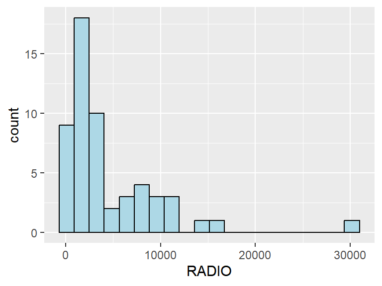
Boxplot:
Summarises the distribution using the five-number summary (minimum, Q1, median, Q3, maximum).
Makes it easy to detect outliers and understand the spread and central tendency of the data.
Allows quick comparison across multiple variables or groups (e.g., by township).
ggplot(data=ict_derived,
aes(x= RADIO )) +
geom_boxplot(color="black",
fill="light blue")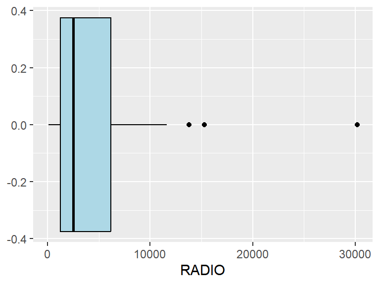
Let’s also visualise the distribution of the newly derived variables (i.e. Radio penetration rate).
ggplot(data = ict_derived,
aes(x = RADIO_PR)) +
geom_histogram(bins = 20,
color = "black",
fill = "light blue")
ggplot(data = ict_derived,
aes(x = RADIO_PR)) +
geom_boxplot(color = "black", fill = "light blue")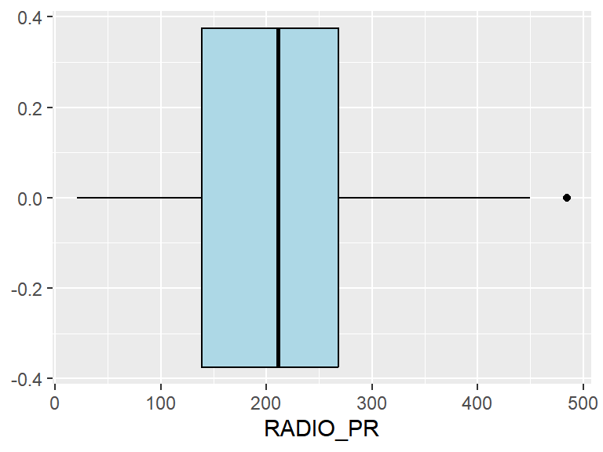
Note
- What can you observed from the distributions reveal in the histogram and boxplot?
The penetration rate data are more normally distributed and show fewer outliers than the raw ownership counts, since the effect of township size has been normalised.
In the figure below, multiple histograms are plotted to reveal the distribution of the selected variables in the ict_derived data.frame.
In tmap, tmap_arrange() (or tmarange) is used to arrange multiple map plots side by side or in a grid layout.
In ggplot2, the equivalent is ggarrange() from the ggpubr package.
View code
radio <- ggplot(data= ict_derived,
aes(x = RADIO_PR)) +
geom_histogram(bins = 20, color = "black", fill = "light blue")
tv <- ggplot(data = ict_derived, aes(x= TV_PR)) +
geom_histogram(bins = 20, color = "black", fill = "light blue")
llphone <- ggplot(data = ict_derived, aes(x = LLPHONE_PR)) +
geom_histogram(bins = 20, color = "black",fill = "light blue")
mphone <- ggplot(data = ict_derived, aes(x = MPHONE_PR)) +
geom_histogram(bins = 20, color = "black", fill = "light blue")
computer <- ggplot(data = ict_derived, aes(x = COMPUTER_PR)) +
geom_histogram(bins = 20, color = "black", fill ="light blue")
internet <- ggplot(data = ict_derived, aes(x = INTERNET_PR)) +
geom_histogram(bins = 20, color = "black", fill = "light blue")
ggarrange(radio, tv, llphone, mphone, computer, internet,
ncol = 3,
nrow = 2)
5.2 EDA Using Choropleth Map
5.2.1 Joining Geospatial Data with Aspatial Data
Previously we use the ggplot2 to visualise the distribution and outliers of the ICT variables in the tibble data.frame ict_derived. To incorporate the statistical data with corresponding township locations, we now use left_join() function from the dplyr package to combine the two data sets ( shan_sf as an sf data.frame and ict_derived) based on the primary key ‘TS_PCODE’. We then plot a choropleth map of the selected variable distribution using the qtm() function from the tmap package. The code chunk below performs the above-mentioned first step.
shan_sf <- left_join(shan_sf, ict_derived, by = c("TS_PCODE" = "TS_PCODE"))
write_rds(shan_sf, "data/rds/shan_sf.rds") #save for further analysisshan_sf <- read_rds("data/rds/shan_sf.rds")5.2.2 Preparing a Choropleth Map
The code chunk below uses the qtm() function from the tmap package to create a choropleth map that visualises the spatial distribution of radio penetration rates across Shan State townships.
qtm(shan_sf, "RADIO_PR")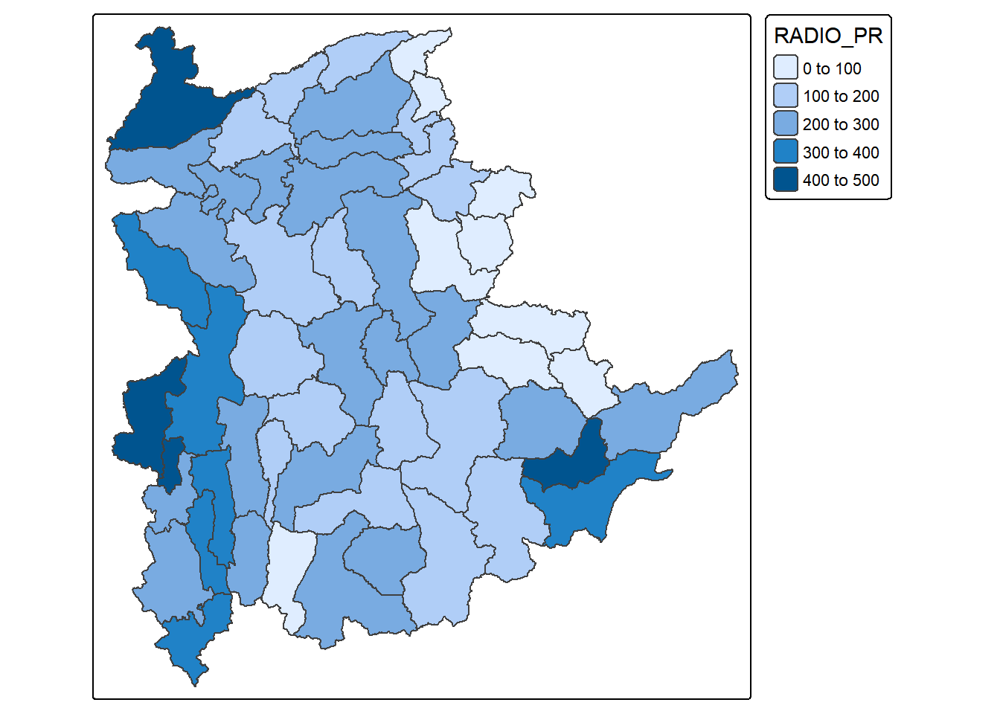
Next let’s visualise why it is important to transform absolute values to relative measures before performing spatial analysis. Otherwise the results could be biased. The difference becomes clear when we comparing the distribution of the total number households across townships (TT_HOUSEHOLDS.map) with the distribution of households owning Radio (Radio.map).
The code chunk plot two choropleth maps and arrange them side by side.
TT_HOUSEHOLDS.map <- tm_shape(shan_sf) +
tm_fill("TT_HOUSEHOLDS", # colour or numeric or categorical variable in `shp`
n = 5,
style = "jenks", # preferred number of classes for numeric 'col'
title = "Total households", textNA = NA) +
tm_layout(legend.position = c("right", "top")) +
tm_borders(alpha = 0.5)
RADIO.map <- tm_shape(shan_sf) +
tm_fill( "RADIO",
n = 5,
style = "jenks",
title = "Number Radio ",textNA = NA) +
tm_layout(legend.position = c("right", "top")) +
tm_borders(alpha = 0.5)
tmap_arrange(TT_HOUSEHOLDS.map, RADIO.map,
asp=1, ncol=2) #Aspect ratio of each map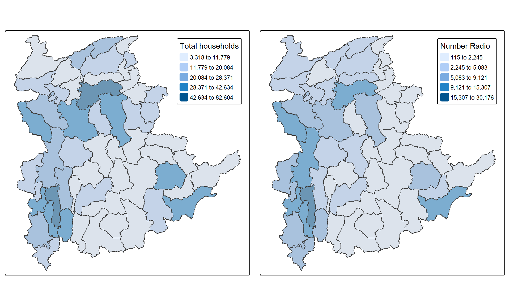
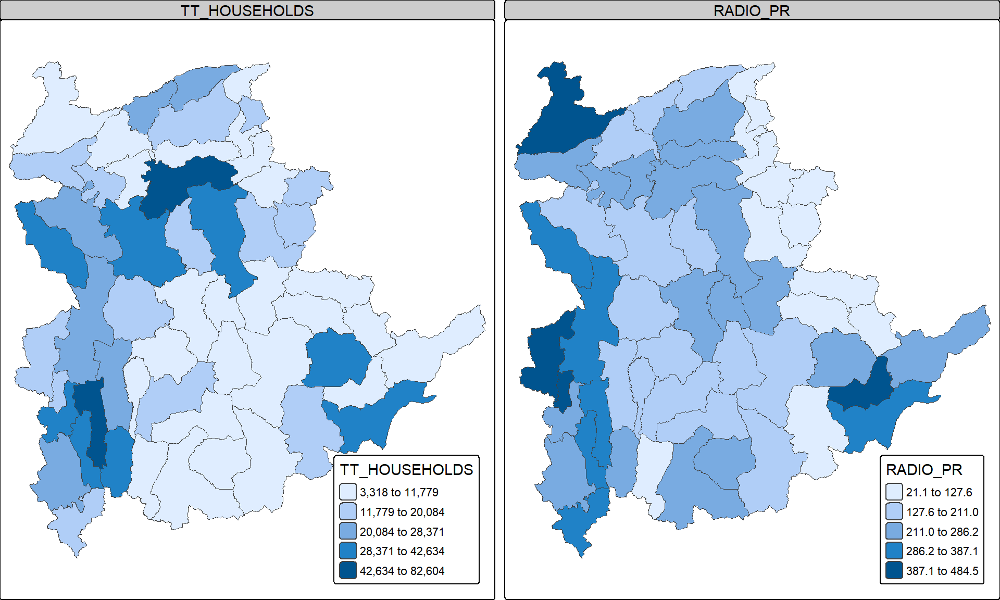
Note
- Can you identify the differences?
Although the penetration rate map partly mirrors the distribution of total households, radio ownership does not scale one-to-one with township population. Other factors (e.g., income, market access etc) influence adoption, so using relative measures such as penetration rate reduces size bias and provides a more accurate basis for clustering and spatial comparisons than raw counts.
Tip
- Jenks: Reveals natural clusters in skewed data by minimising within-class variance.
Tip: Great for one-off maps; for comparisons, compute once and use fixed breaks.
- Equal interval: Splits the value range into equal-width bins. simple and consistent.
Tip: Best when data are fairly uniform or when you need fixed policy thresholds.
- Quantile: Puts an equal number of features in each class, highlighting ranks/percentiles.
Tip: Ensures balanced colours; watch for tiny value differences flipping classes.
- Pretty: Uses rounded, human-friendly breakpoints for clean legends.
Tip: Ideal for communication; double-check that the bins still reflect the data distribution.
6 Correlation Analysis
Before running cluster analysis, we should check correlations between variables. If a pair is highly correlated (e.g., |r| >= 0.8), one of the pair should be dropped to avoid redundancy. The code chunk below uses corrplot.mixed() function from corrplot package to visualise the correlations.
cluster_vars.cor = cor(ict_derived[,12:17]) #corr matrix
corrplot.mixed(cluster_vars.cor, # use mixed method to visualise the matrix
lower = "ellipse", # visualisation methods for lower triangular
upper = "number", ## visualisation methods for upper triangular
tl.pos = "lt", #text label position: lt means left and top, d diagonal, n means no.
diag ="l", #glyph in diagonal: n/l/u means no/lower/upper
tl.col = "black")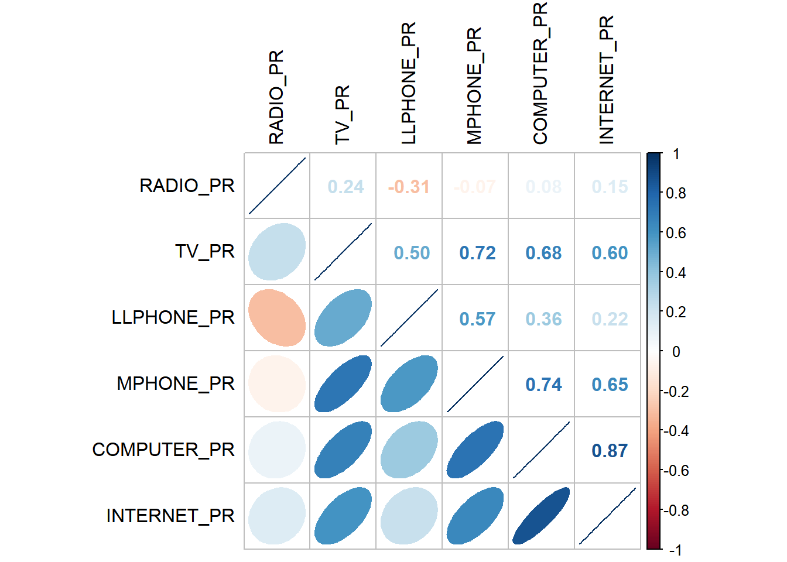
We observe that INTERNET_PR is highly correlated with COMPUTER_PR (r = 0.87), so we will drop one of them from the cluster analysis to avoid redundancy.
7 Hiearachy Cluster Anlaysis
The general workflow of hierarchy cluster analysis consists of:
Extracting clustering variables (screen for NAs & high correlations).
st_set_geometry(NULL);select();row.names()Standardising the variables (min-max/ z-scores).
normalize();scale()Computing a proximity (distance) matrix (often Euclidean).
dist()Running hierarchical clustering (choose linkage, e.g., ward.D2).
hclust();agnes()Determining the optimal number of clusters (dendrogram + silhouette/gap/NbClust).
clusGap(FUN = hcut)Interpreting the dendrogram & profile clusters (cluster means, maps, tables).
rect.hclust()Visualisation (dendrogram, heatmap, spatial choropleths).
heatmaply(),cutree(),cbind(),qtm()
7.1 Extracting Clustering Variables
The code chunk below extracts the 5 clustering variables (excluding INTERNET_PR) from shan_sf sf object to a new data.frame.
cluster_vars <- shan_sf %>%
st_set_geometry(NULL) %>% # or st_drop_geometry() removes the geometry
select("TS.x", "RADIO_PR", "TV_PR", "LLPHONE_PR", "MPHONE_PR", "COMPUTER_PR") # INTERNET_PR is omitted
head(cluster_vars,10) TS.x RADIO_PR TV_PR LLPHONE_PR MPHONE_PR COMPUTER_PR
1 Mongmit 286.1852 554.1313 35.30618 260.6944 12.15939
2 Pindaya 417.4647 505.1300 19.83584 162.3917 12.88190
3 Ywangan 484.5215 260.5734 11.93591 120.2856 4.41465
4 Pinlaung 231.6499 541.7189 28.54454 249.4903 13.76255
5 Mabein 449.4903 708.6423 72.75255 392.6089 16.45042
6 Kalaw 280.7624 611.6204 42.06478 408.7951 29.63160
7 Pekon 318.6118 535.8494 39.83270 214.8476 18.97032
8 Lawksawk 387.1017 630.0035 31.51366 320.5686 21.76677
9 Nawnghkio 349.3359 547.9456 38.44960 323.0201 15.76465
10 Kyaukme 210.9548 601.1773 39.58267 372.4930 30.94709summary(cluster_vars) TS.x RADIO_PR TV_PR LLPHONE_PR
Length:55 Min. : 21.05 Min. :116.0 Min. : 2.78
Class :character 1st Qu.:138.95 1st Qu.:450.2 1st Qu.: 22.84
Mode :character Median :210.95 Median :517.2 Median : 37.59
Mean :215.68 Mean :509.5 Mean : 51.09
3rd Qu.:268.07 3rd Qu.:606.4 3rd Qu.: 69.72
Max. :484.52 Max. :842.5 Max. :181.49
MPHONE_PR COMPUTER_PR
Min. : 36.42 Min. : 3.278
1st Qu.:190.14 1st Qu.:11.832
Median :305.27 Median :18.970
Mean :314.05 Mean :24.393
3rd Qu.:428.43 3rd Qu.:29.897
Max. :735.43 Max. :92.402 class(cluster_vars)[1] "data.frame"The code chunk sets the row names to township names so those labels automatically flow through to new tables and new maps.
TS.x RADIO_PR TV_PR LLPHONE_PR MPHONE_PR COMPUTER_PR
Mongmit Mongmit 286.1852 554.1313 35.30618 260.6944 12.15939
Pindaya Pindaya 417.4647 505.1300 19.83584 162.3917 12.88190
Ywangan Ywangan 484.5215 260.5734 11.93591 120.2856 4.41465
Pinlaung Pinlaung 231.6499 541.7189 28.54454 249.4903 13.76255
Mabein Mabein 449.4903 708.6423 72.75255 392.6089 16.45042
Kalaw Kalaw 280.7624 611.6204 42.06478 408.7951 29.63160
Pekon Pekon 318.6118 535.8494 39.83270 214.8476 18.97032
Lawksawk Lawksawk 387.1017 630.0035 31.51366 320.5686 21.76677
Nawnghkio Nawnghkio 349.3359 547.9456 38.44960 323.0201 15.76465
Kyaukme Kyaukme 210.9548 601.1773 39.58267 372.4930 30.94709The code chunk below deletes the TS.x field.
RADIO_PR TV_PR LLPHONE_PR MPHONE_PR COMPUTER_PR
Mongmit 286.1852 554.1313 35.30618 260.6944 12.15939
Pindaya 417.4647 505.1300 19.83584 162.3917 12.88190
Ywangan 484.5215 260.5734 11.93591 120.2856 4.41465
Pinlaung 231.6499 541.7189 28.54454 249.4903 13.76255
Mabein 449.4903 708.6423 72.75255 392.6089 16.45042
Kalaw 280.7624 611.6204 42.06478 408.7951 29.63160
Pekon 318.6118 535.8494 39.83270 214.8476 18.97032
Lawksawk 387.1017 630.0035 31.51366 320.5686 21.76677
Nawnghkio 349.3359 547.9456 38.44960 323.0201 15.76465
Kyaukme 210.9548 601.1773 39.58267 372.4930 30.947097.2 Data Standardisation
In cluster analysis, multiple variables often have different scales. To prevent variables with larger magnitudes from dominating the results, we should standardise the inputs before clustering.
7.2.1 Min-Max Standardisation
In the code chunk below, normalize() from the heatmaply package is used to normalise the clustering variables via the min–max method. We then use summary() to display summary statistics for the normalised variables.
shan_ict.std <- normalize(shan_ict)
summary(shan_ict.std) RADIO_PR TV_PR LLPHONE_PR MPHONE_PR
Min. :0.0000 Min. :0.0000 Min. :0.0000 Min. :0.0000
1st Qu.:0.2544 1st Qu.:0.4600 1st Qu.:0.1123 1st Qu.:0.2199
Median :0.4097 Median :0.5523 Median :0.1948 Median :0.3846
Mean :0.4199 Mean :0.5416 Mean :0.2703 Mean :0.3972
3rd Qu.:0.5330 3rd Qu.:0.6750 3rd Qu.:0.3746 3rd Qu.:0.5608
Max. :1.0000 Max. :1.0000 Max. :1.0000 Max. :1.0000
COMPUTER_PR
Min. :0.00000
1st Qu.:0.09598
Median :0.17607
Mean :0.23692
3rd Qu.:0.29868
Max. :1.00000 The values of the min-max standardised clustering variables range from 0-1.
7.2.2 Z-score Standardisation
Z-score standardisation can be done with base R’s scale(). The code below standardises the clustering variables.
shan_ict.z <- scale(shan_ict)
describe(shan_ict.z) vars n mean sd median trimmed mad min max range skew kurtosis
RADIO_PR 1 55 0 1 -0.04 -0.06 0.94 -1.85 2.55 4.40 0.48 -0.27
TV_PR 2 55 0 1 0.05 0.04 0.78 -2.47 2.09 4.56 -0.38 -0.23
LLPHONE_PR 3 55 0 1 -0.33 -0.15 0.68 -1.19 3.20 4.39 1.37 1.49
MPHONE_PR 4 55 0 1 -0.05 -0.06 1.01 -1.58 2.40 3.98 0.48 -0.34
COMPUTER_PR 5 55 0 1 -0.26 -0.18 0.64 -1.03 3.31 4.34 1.80 2.96
se
RADIO_PR 0.13
TV_PR 0.13
LLPHONE_PR 0.13
MPHONE_PR 0.13
COMPUTER_PR 0.13After transformation, each variable has mean 0 and standard deviation 1. We use describe() of pysch package rather than base summary() because it reports the standard deviation.
Warning
Note on assumptions:
We standardise variables using z-scores to place them on a common scale. This does not assume normality; however, for highly skewed or outlier-prone variables, consider a transformation (log/Yeo–Johnson) or robust scaling (median/MAD) before or instead of z-scaling.
7.2.3 Visualising the Standardised Clustering Varaibles
The code chunk below visualises the distribution of the clustering variable RADIO_PR before and after standardisation.
r <- ggplot(data=ict_derived, aes(x= `RADIO_PR`)) +
geom_histogram(bins = 20, color = "black", fill = "light blue") +
ggtitle("RAW values")
shan_ict_s_df <- as.data.frame(shan_ict.std)
s<- ggplot(data = shan_ict_s_df, aes(x= `RADIO_PR`)) +
geom_histogram(bins = 20, color = "black", fill = "light blue") +
ggtitle("Min-max standardisation")
shan_ict_z_df <- as.data.frame(shan_ict.z)
z<- ggplot(data = shan_ict_z_df, aes(x= `RADIO_PR`)) +
geom_histogram(bins = 20, color = "black", fill = "light blue") +
ggtitle("Z-score standardisation")
ggarrange(r, s, z,
ncol = 3,
nrow = 1)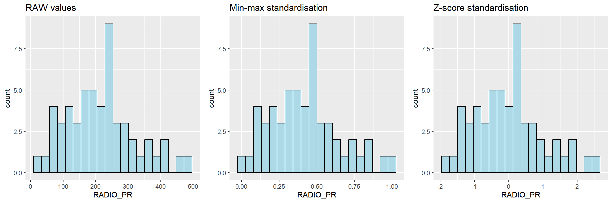
names(shan_ict[1:5])[1] "RADIO_PR" "TV_PR" "LLPHONE_PR" "MPHONE_PR" "COMPUTER_PR"The code chunk below generates the before-and-after distribution for each ICT clustering variables.
View code
shan_ict_s_df <- as.data.frame(shan_ict.std)
shan_ict_z_df <- as.data.frame(shan_ict.z)
plot_histograms <- function(col) {
r <- ggplot(ict_derived, aes(x = .data[[col]])) +
geom_histogram(bins = 20, color = "black", fill = "lightblue") +
ggtitle(paste("Raw:", col))
s <- ggplot(shan_ict_s_df, aes(x = .data[[col]])) +
geom_histogram(bins = 20, color = "black", fill = "lightblue") +
ggtitle(paste("Min-max:", col))
z <- ggplot(shan_ict_z_df, aes(x = .data[[col]])) +
geom_histogram(bins = 20, color = "black", fill = "lightblue") +
ggtitle(paste("Z-score:", col))
ggarrange(r, s, z, ncol = 3, nrow = 1)}
# for (col in names(shan_ict) {print(plot_histograms(col))}
plots <- lapply(names(shan_ict), plot_histograms) # list
ggarrange(plotlist = plots, ncol = 1, nrow = length(plots))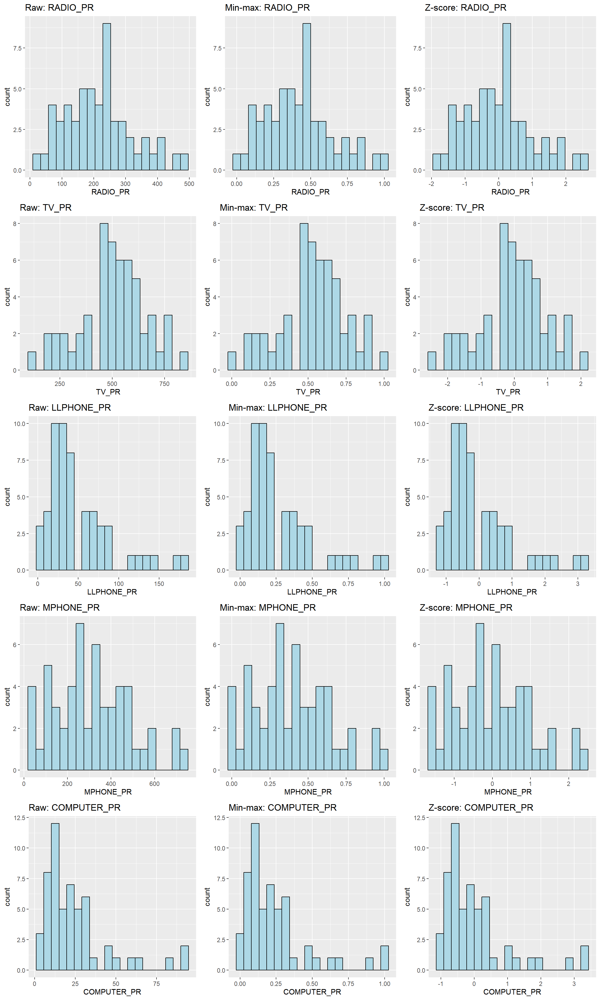
Note
What statistical conclusion can you draw from the histograms above?
The histograms compare raw, min–max scaled, and z-score scaled values for each variable. standardisation only changes the measurement units, not the distribution shapes.
r <- ggplot(data=ict_derived,
aes(x= `RADIO_PR`)) +
geom_density(color="black",
fill="light blue") +
ggtitle("Raw values without standardisation")
shan_ict_s_df <- as.data.frame(shan_ict.std)
s <- ggplot(data=shan_ict_s_df,
aes(x=`RADIO_PR`)) +
geom_density(color="black",
fill="light blue") +
ggtitle("Min-Max Standardisation")
shan_ict_z_df <- as.data.frame(shan_ict.z)
z <- ggplot(data=shan_ict_z_df,
aes(x=`RADIO_PR`)) +
geom_density(color="black",
fill="light blue") +
ggtitle("Z-score Standardisation")
ggarrange(r, s, z,
ncol = 3,
nrow = 1)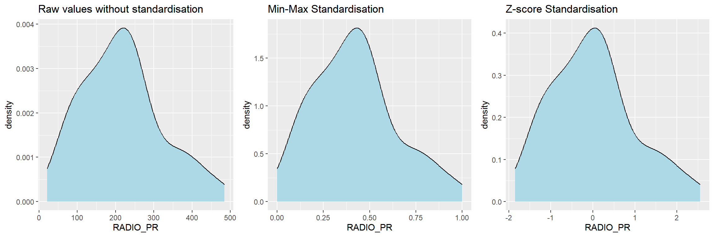
7.3 Computing Proximity Matrix
In R, several packages provide functions to calculate distance matrices. Here, we will use the dist() function of base R to compute a proximity matrix.
The function does not calculate geographic distance (like latitude–longitude great-circle distance).
Instead, it calculates mathematical distances in feature space, based on the values of the clustering variables (columns).
Note
dist(x, method = “euclidean”, diag = FALSE, upper = FALSE, p = 2)
- x is a numeric matrix, data frame or dist object.
- p is the power of the Minkowski distance.
- 6 methods include euclidean, maximum, manhattan, canberra, binary, and minkowski, with euclidean being the default.
The code chunk demonstrates how to generate a proximity matrix using the euclidean method.
proxmat <- dist(shan_ict,method="euclidean")summary(proxmat) Min. 1st Qu. Median Mean 3rd Qu. Max.
38.53 204.48 307.27 331.77 429.95 995.66 proxmat7.4 Computing Hierachical Clustering
In R, several packages provide functions for hierarchical clustering. We use the hclust() function from base R to build clusters.
Thefunction applies an agglomerative approach (bottom up).
Note
hclust(d, method = “complete”, members = NULL)
d is a dist object
method supports eight clustering methods: ward.D, ward.D2, single, complete, average (UPGMA), mcquitty (WPGMA), median (WPGMC), and centroid (UPGMC).
The code chunk below computes hierarchical clustering using the ward.D method. The results are stored in an object of class hclust, which contains the tree structure (dendrogram) generated by the clustering process.
hclust_ward <- hclust(proxmat, method = "ward.D")
hclust_ward$labels[1][1] "Mongmit"hclust_ward$height[1][1] 38.52842The code chunk creates the tree by using plot() of R Graphics.
plot(hclust_ward, cex = 0.9) #shrink by 10%
7.5 Selecting the Optimal Clustering Algorithm
One challenge in hierarchical clustering is determining the stronger cluster structure. Unlike hclust(), the agnes() function from the cluster package directly returns the agglomerative coefficient (AC). When AC closer to 1, it indicates a stronger clustering structure.
Note
agnes(x, diss = inherits(x, “dist”), metric = “euclidean”, stand = FALSE, method = “average”, par.method, keep.diss = n < 100, keep.data = !diss, trace.lev = 0) agnes: short for Agglomerative Nesting.
Below, we compute the agglomerative coefficient for several linkage methods and compare them.
average single complete ward
0.8131144 0.6628705 0.8950702 0.9427730 7.6 Determining Optimal Clusters
Another technical challenge is deciding on the optimal number of clusters to retain. Choosing too few clusters may oversimplify the data, while too many clusters may lead to overfitting and poor interpretability.
Three commonly used methods to determine the appropriate number of clusters are:
Plots the total within-cluster sum of squares (WSS) against the number of clusters.
The “elbow” point, where the rate of decrease sharply slows, indicates a suitable number of clusters.
Computes the silhouette coefficient, which measures how similar an observation is to its own cluster compared to other clusters.
The number of clusters with the highest average silhouette value is considered optimal.
Compares the total within-cluster variation for k different numbers of clusters with the expected values under a null reference distribution.
The optimal number of clusters is the one that maximises the gap statistic.
7.6.1 Gap Statistic Method
The code chunk below uses clusGap() of cluster(https://cran.r-project.org/web/packages/cluster/index.html) package to compute the gap statistics. The hcut() function used is from factoextra package.
Clustering Gap statistic ["clusGap"] from call:
clusGap(x = shan_ict, FUNcluster = hcut, K.max = 10, B = 50, nstart = 25)
B=50 simulated reference sets, k = 1..10; spaceH0="scaledPCA"
--> Number of clusters (method 'firstmax'): 1
logW E.logW gap SE.sim
[1,] 8.407129 8.680794 0.2736651 0.04460994
[2,] 8.130029 8.350712 0.2206824 0.03880130
[3,] 7.992265 8.202550 0.2102844 0.03362652
[4,] 7.862224 8.080655 0.2184311 0.03784781
[5,] 7.756461 7.978022 0.2215615 0.03897071
[6,] 7.665594 7.887777 0.2221833 0.03973087
[7,] 7.590919 7.806333 0.2154145 0.04054939
[8,] 7.526680 7.731619 0.2049390 0.04198644
[9,] 7.458024 7.660795 0.2027705 0.04421874
[10,] 7.377412 7.593858 0.2164465 0.04540947The code chunk below visualises the outcome by using fviz_gap_stat() of factoextra package.
fviz_gap_stat(gap_stat)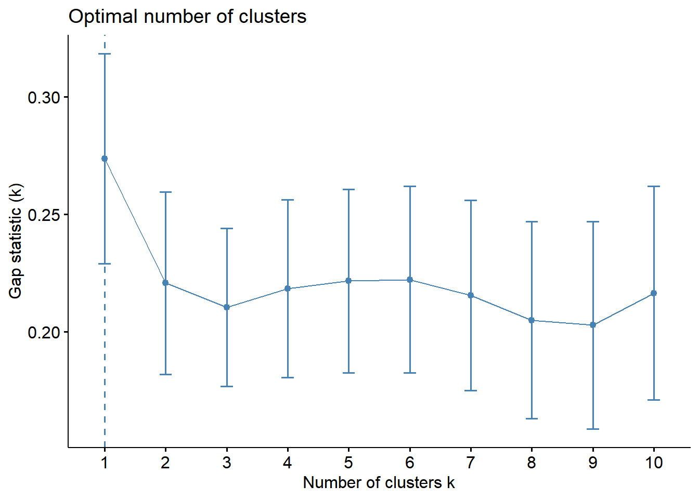
Important
Interpreting the Gap Statistic
- Although the highest Gap value appears at k = 1, retaining only one cluster is not meaningful, as clustering is intended to partition data into multiple groups. A more practical choice is k = 6 where the Gap value reaches its next highest point.
Additional Methods
Beyond the Elbow, Silhouette, and Gap Statistic methods, another powerful tool is the NbClust package (Charrad et al., 2014). This package provides access to 30 different indices for determining the optimal number of clusters.
set.seed(12345)
nb_hclust <- NbClust(
data = shan_ict, # data all numeric, no categorical columns)
distance = "euclidean", # same as for hcut
min.nc = 2, # minimum number of clusters to consider
max.nc = 10, # maximum number of clusters to consider
method = "ward.D2", # hierarchical clustering linkage
index = "all" # or pick e.g. "silhouette", "gap", etc.
)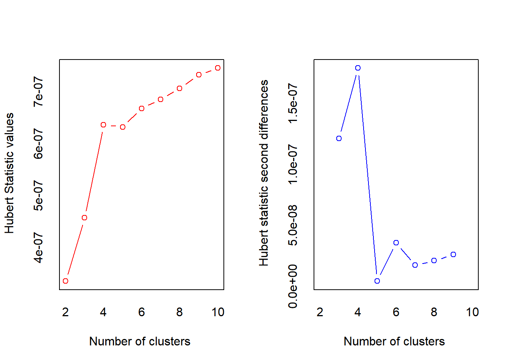
*** : The Hubert index is a graphical method of determining the number of clusters.
In the plot of Hubert index, we seek a significant knee that corresponds to a
significant increase of the value of the measure i.e the significant peak in Hubert
index second differences plot.
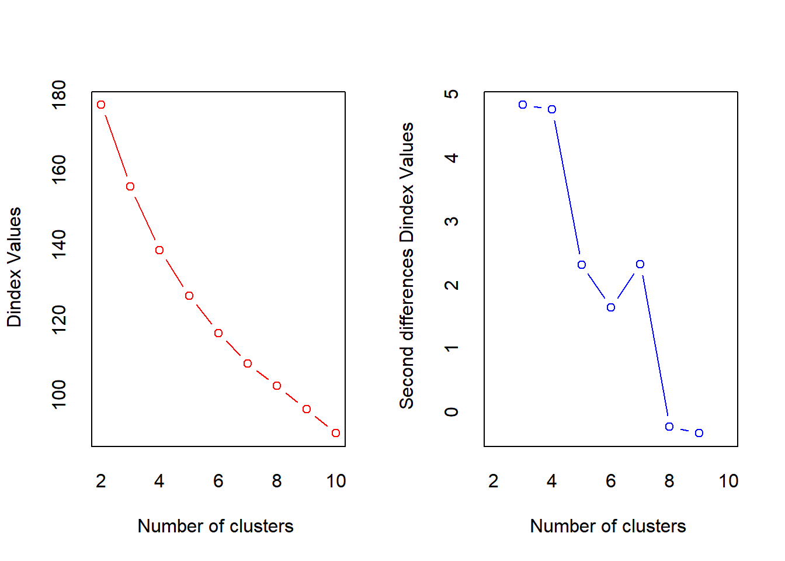
*** : The D index is a graphical method of determining the number of clusters.
In the plot of D index, we seek a significant knee (the significant peak in Dindex
second differences plot) that corresponds to a significant increase of the value of
the measure.
*******************************************************************
* Among all indices:
* 8 proposed 2 as the best number of clusters
* 2 proposed 3 as the best number of clusters
* 7 proposed 4 as the best number of clusters
* 2 proposed 5 as the best number of clusters
* 1 proposed 6 as the best number of clusters
* 1 proposed 8 as the best number of clusters
* 1 proposed 9 as the best number of clusters
* 1 proposed 10 as the best number of clusters
***** Conclusion *****
* According to the majority rule, the best number of clusters is 2
******************************************************************* nb_hclust$All.index
KL CH Hartigan CCC Scott Marriot TrCovW TraceW
2 4.7506 40.8359 14.1642 9.6381 214.9289 2.739953e+26 288943792231 2118141.0
3 0.5333 32.3349 16.2643 6.3406 258.3149 2.801162e+26 209193570522 1671447.2
4 1.8655 33.0719 10.3552 5.0775 303.6425 2.184222e+26 126136578089 1273217.0
5 1.3725 31.7931 8.0237 4.9618 332.0309 2.036829e+26 82708322696 1058330.7
6 1.0264 30.4984 7.4535 4.7816 361.3077 1.722425e+26 65918461492 911981.0
7 1.1954 29.9007 6.4221 4.7237 398.9364 1.182790e+26 50221409891 791572.8
8 0.8637 29.3511 6.9403 4.6464 421.0144 1.034088e+26 35257823368 698163.2
9 1.2336 29.6966 5.9766 4.7838 455.3383 7.011844e+25 26203290270 608333.0
10 0.8731 29.8278 6.6791 4.8467 480.7082 5.457832e+25 18998189662 538382.9
Friedman Rubin Cindex DB Silhouette Duda Pseudot2 Beale Ratkowsky
2 74.7859 12.3630 0.4107 1.1339 0.3470 0.6046 18.9681 1.9789 0.3486
3 103.5483 15.6670 0.3595 1.1238 0.2955 0.5971 14.8424 2.0197 0.3330
4 114.1278 20.5672 0.3235 1.1858 0.2825 0.5019 15.8819 2.9240 0.3372
5 126.4574 24.7433 0.3000 0.9989 0.2851 0.7111 8.9399 1.2165 0.3288
6 158.0331 28.7139 0.3275 1.2299 0.2529 0.3176 10.7433 5.6041 0.3076
7 184.4102 33.0817 0.3137 1.1031 0.2777 1.4676 -1.9116 -0.8547 0.2979
8 203.7102 37.5078 0.4416 0.9164 0.2923 0.4347 5.2021 3.2563 0.2856
9 213.0627 43.0464 0.4293 0.8831 0.3026 0.6053 7.1735 1.8710 0.2793
10 220.3248 48.6393 0.4068 0.9144 0.2979 0.6747 6.7511 1.4086 0.2705
Ball Ptbiserial Frey McClain Dunn Hubert SDindex Dindex SDbw
2 1059070.50 0.4504 0.4142 0.6276 0.1066 0 0.0143 177.4864 1.3473
3 557149.05 0.4839 0.1397 0.9146 0.1066 0 0.0140 155.6721 0.6285
4 318304.24 0.5316 0.6362 1.1063 0.1135 0 0.0162 138.6899 0.5254
5 211666.15 0.5195 0.8959 1.3125 0.1135 0 0.0147 126.4706 0.4292
6 151996.84 0.4574 0.0877 2.0294 0.1393 0 0.0193 116.5731 0.3324
7 113081.83 0.4619 0.0397 2.0580 0.1393 0 0.0185 108.3210 0.2573
8 87270.39 0.4671 0.1112 2.0655 0.1697 0 0.0180 102.3993 0.1586
9 67592.56 0.4697 0.7212 2.0895 0.1697 0 0.0168 96.2497 0.1318
10 53838.29 0.4397 0.5271 2.5066 0.1697 0 0.0176 89.7694 0.1266
$All.CriticalValues
CritValue_Duda CritValue_PseudoT2 Fvalue_Beale
2 0.5399 24.7090 0.0852
3 0.4945 22.4873 0.0814
4 0.4360 20.6953 0.0178
5 0.4945 22.4873 0.3062
6 0.1725 23.9899 0.0013
7 0.2177 21.5613 1.0000
8 0.1164 30.3727 0.0260
9 0.3589 19.6519 0.1144
10 0.4095 20.1850 0.2318
$Best.nc
KL CH Hartigan CCC Scott Marriot TrCovW
Number_clusters 2.0000 2.0000 4.0000 2.0000 4.0000 4.000000e+00 4
Value_Index 4.7506 40.8359 5.9091 9.6381 45.3276 4.695474e+25 83056992433
TraceW Friedman Rubin Cindex DB Silhouette Duda
Number_clusters 4.0 6.0000 4.0000 5.0 9.0000 2.000 2.0000
Value_Index 183343.9 31.5757 -0.7242 0.3 0.8831 0.347 0.6046
PseudoT2 Beale Ratkowsky Ball PtBiserial Frey McClain
Number_clusters 2.0000 5.0000 2.0000 3.0 4.0000 1 2.0000
Value_Index 18.9681 1.2165 0.3486 501921.5 0.5316 NA 0.6276
Dunn Hubert SDindex Dindex SDbw
Number_clusters 8.0000 0 3.000 0 10.0000
Value_Index 0.1697 0 0.014 0 0.1266
$Best.partition
Mongmit Pindaya Ywangan Pinlaung Mabein Kalaw Pekon
1 1 1 1 2 2 1
Lawksawk Nawnghkio Kyaukme Muse Laihka Mongnai Mawkmai
2 2 2 2 1 1 1
Kutkai Mongton Mongyai Mongkaing Lashio Mongpan Matman
1 1 1 1 2 2 1
Tachileik Narphan Mongkhet Hsipaw Monghsat Mongmao Nansang
2 1 1 1 1 2 1
Laukkaing Pangsang Namtu Monghpyak Konkyan Mongping Hopong
2 2 1 2 1 1 1
Nyaungshwe Hsihseng Mongla Hseni Kunlong Hopang Namhkan
2 1 2 2 1 2 2
Kengtung Langkho Monghsu Taunggyi Pangwaun Kyethi Loilen
2 2 1 2 2 1 1
Manton Mongyang Kunhing Mongyawng Tangyan Namhsan
1 2 1 2 1 1 nb_hclust$Best.nc KL CH Hartigan CCC Scott Marriot TrCovW
Number_clusters 2.0000 2.0000 4.0000 2.0000 4.0000 4.000000e+00 4
Value_Index 4.7506 40.8359 5.9091 9.6381 45.3276 4.695474e+25 83056992433
TraceW Friedman Rubin Cindex DB Silhouette Duda
Number_clusters 4.0 6.0000 4.0000 5.0 9.0000 2.000 2.0000
Value_Index 183343.9 31.5757 -0.7242 0.3 0.8831 0.347 0.6046
PseudoT2 Beale Ratkowsky Ball PtBiserial Frey McClain
Number_clusters 2.0000 5.0000 2.0000 3.0 4.0000 1 2.0000
Value_Index 18.9681 1.2165 0.3486 501921.5 0.5316 NA 0.6276
Dunn Hubert SDindex Dindex SDbw
Number_clusters 8.0000 0 3.000 0 10.0000
Value_Index 0.1697 0 0.014 0 0.1266While NbClust favoured 2 clusters, the Gap Statistic pointed to 6 clusters. Considering interpretability and the need for meaningful subgroup distinctions, the 6-cluster solution was selected for subsequent analysis.
7.7 Interpreting the Dendrograms
In the dendrogram, each leaf represents an observation. Moving upward, similar observations are joined into branches, which then merge at higher levels. The vertical axis shows the fusion height, reflecting dissimilarity: lower values indicate greater similarity, while higher values mean less similarity. Similarity can only be inferred from the height at which branches first merge, not from their horizontal positions.
plot(hclust_ward, cex = 0.9) #shrink by 10%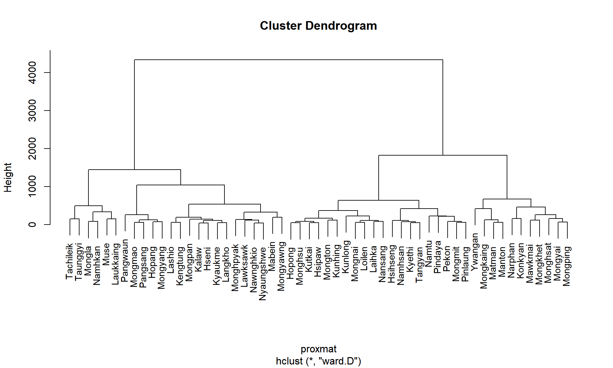
We use rect.hclust() of R stats to draw the border boxes. border = 2:5 means: to use red, green, blue, and cyan as the rectangle borders.
plot(hclust_ward, cex = 0.9)
rect.hclust(hclust_ward,
k = 6,
border = 2:5)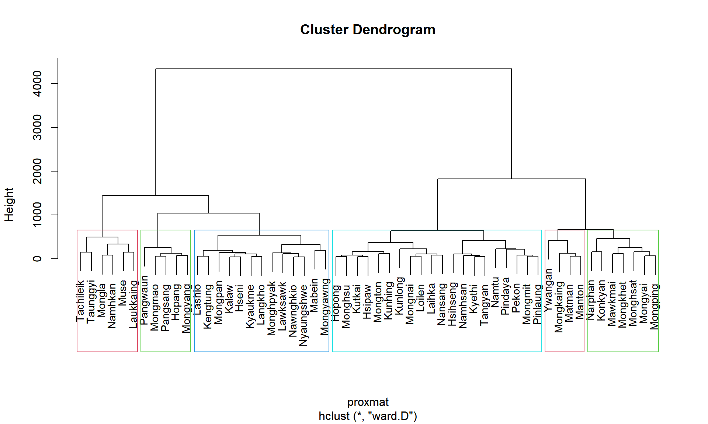
7.8 Visually-driven Hierarchical Clustering Analysis
In this section, we use the heatmaply package to create visually driven hierarchical clustering (both interactive and static).
7.8.1 Transforming the Data Frame into a Matrix
The code chunk below transforms the shan_ict data from into a data matrix.
shan_ict_mat <- data.matrix(shan_ict)7.8.2 Plotting Interactive Cluster Heatmap using heatmaply()
The code chunk below uses heatmaply() heatmaply package to create interactive cluster heatmap.
heatmaply(normalize(shan_ict_mat),
Colv=NA,
dist_method = "euclidean",
hclust_method = "ward.D",
seriate = "OLO",
colors = Blues,
k_row = 6,
margins = c(NA,200,60,NA),
fontsize_row = 4,
fontsize_col = 5,
main="Geographic Segmentation of Shan State by ICT indicators",
xlab = "ICT Indicators",
ylab = "Townships of Shan State"
)7.9 Mapping the Clusters Formed
As six clusters appear appropriate, we use cutree() of Base R to derive a 6-cluster model.
Mongmit Pindaya Ywangan Pinlaung Mabein Kalaw Pekon
1 1 2 1 3 3 1
Lawksawk Nawnghkio Kyaukme Muse Laihka Mongnai Mawkmai
3 3 3 4 1 1 5
Kutkai Mongton Mongyai Mongkaing Lashio Mongpan Matman
1 1 5 2 3 3 2
Tachileik Narphan Mongkhet Hsipaw Monghsat Mongmao Nansang
4 5 5 1 5 6 1
Laukkaing Pangsang Namtu Monghpyak Konkyan Mongping Hopong
4 6 1 3 5 5 1
Nyaungshwe Hsihseng Mongla Hseni Kunlong Hopang Namhkan
3 1 4 3 1 6 4
Kengtung Langkho Monghsu Taunggyi Pangwaun Kyethi Loilen
3 3 1 4 6 1 1
Manton Mongyang Kunhing Mongyawng Tangyan Namhsan
2 6 1 3 1 1
Levels: 1 2 3 4 5 6To visualise the clustering results, this list must be appended to the shan_sf simple feature object. The process can be carried out in three steps:
Convert the groups list into a matrix.
Use
cbind()to attach this matrix toshan_sf, producing a new simple feature object calledshan_sf_cluster.Apply the
rename()function from the dplyr package to change the column name fromas.matrix.groupstoCLUSTER.
Subsequently, the qtm() function from the tmap package is used to generate a choropleth map that displays the cluster results. The map shows that the clusters are highly fragmented, which highlights a key limitation of non-spatial clustering methods such as hierarchical cluster analysis.
qtm(shan_sf_cluster, "CLUSTER")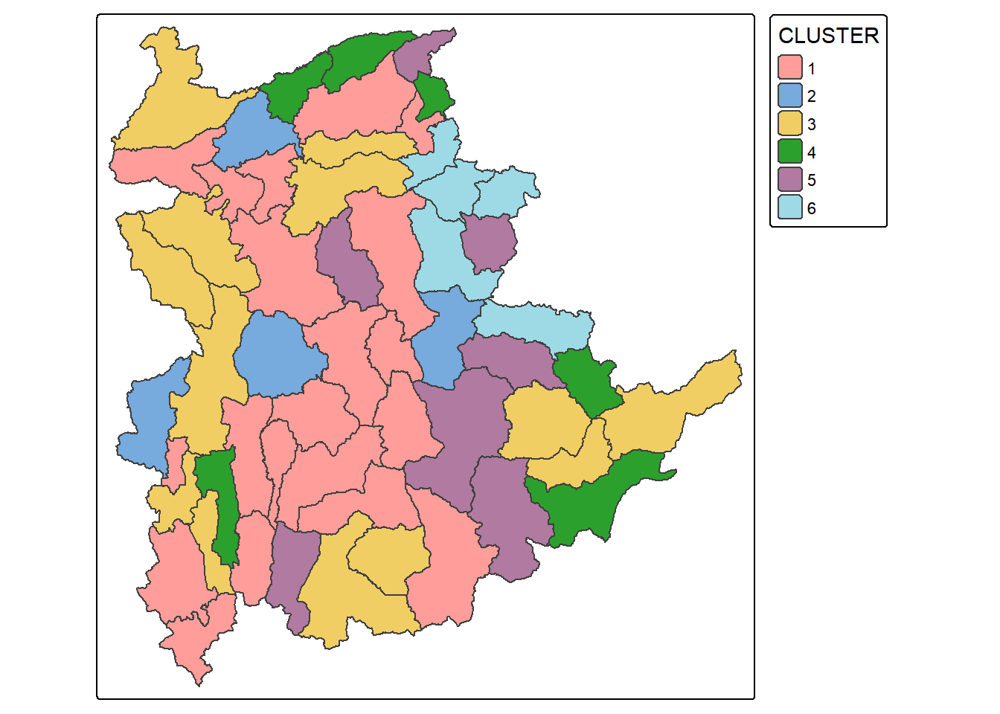
8 Spatially Constrained Clustering: SKATER approach
Next we use skater(https://r-spatial.github.io/spdep/reference/skater.html) from spdep to find spatially constrained cluster.
The skater() stands for Spatial ’K’luster Analysis by Tree Edge Removal.
8.1 Converting into SpatialPolygonsDataFrame
The code chunk below uses [as_Spatial()'](https://r-spatial.github.io/sf/reference/coerce-methods.html) to coerceshan_sfassfinto Spatial*Polygons*DataFrame which can be processed byskater()`function later.
shan_sp <- as_Spatial(shan_sf)8.2 Computing Neighbour List
The code chunk below uses ploy2nb() of spdep to compute the neighbours list from polygon list.
shan.nb <- poly2nb(shan_sp)
summary(shan.nb)Neighbour list object:
Number of regions: 55
Number of nonzero links: 264
Percentage nonzero weights: 8.727273
Average number of links: 4.8
Link number distribution:
2 3 4 5 6 7 8 9
5 9 7 21 4 3 5 1
5 least connected regions:
3 5 7 9 47 with 2 links
1 most connected region:
8 with 9 linksThe code chunk below first extracts the geometry component from shan_sf using st_geometry(). It then calculates the centroids of the polygons st_centroid() and coverts them to their coordinates st_coordinates(). Two plots are produced: the first shows the outlines of shan_sf Shan State townships, and the second overlays the neighbour linkages on top of the map. The neigbhour network is drawn between centroids of the polygons.
coords <- st_coordinates(
st_centroid(st_geometry(shan_sf))
)
8.3 Calculating Edge Costs
The code chunk below uses nbcosts() of spdep to computes attribute-based costs, e.g. the absolute difference in attribute values (or Euclidean distance in attribute space) between neighbours, as passing in a data.frame of attributes.
lcosts <- nbcosts(shan.nb, shan_ict)
head(lcosts, 3)[[1]]
[1] 263.3710 144.0247 430.6407 237.7849
[[2]]
[1] 257.3161 302.5179 204.3295
[[3]]
[1] 257.3161 432.1653For each observation, this computes the pairwise dissimilarity on the five variables with its neighbours, serving as a generalised spatial weight. We then convert the neighbour list into a weights object, using the calculated lcosts as the weights, similar to how inverse distance weights were derived.
In order to achieve this, nb2listw() of spdep package is used as shown in the code chunk below.
shan.w <- nb2listw(shan.nb,
lcosts,
style="B")
summary(shan.w)Characteristics of weights list object:
Neighbour list object:
Number of regions: 55
Number of nonzero links: 264
Percentage nonzero weights: 8.727273
Average number of links: 4.8
Link number distribution:
2 3 4 5 6 7 8 9
5 9 7 21 4 3 5 1
5 least connected regions:
3 5 7 9 47 with 2 links
1 most connected region:
8 with 9 links
Weights style: B
Weights constants summary:
n nn S0 S1 S2
B 55 3025 76267.65 58260785 5220160048.4 Computing minimum spanning tree
The code chunk below calculates the minimum spanning tree by using mtree() of spdep.
shan.mst <- mstree(shan.w)
summary(shan.mst) V1 V2 V3
Min. : 1.00 Min. : 1.00 Min. : 47.79
1st Qu.:13.25 1st Qu.:15.25 1st Qu.:109.45
Median :27.50 Median :28.50 Median :159.93
Mean :28.06 Mean :28.26 Mean :179.38
3rd Qu.:41.00 3rd Qu.:41.75 3rd Qu.:229.43
Max. :55.00 Max. :55.00 Max. :432.10 class(shan.mst)[1] "mst" "matrix"dim(shan.mst)[1] 54 3head(shan.mst,3) [,1] [,2] [,3]
[1,] 14 37 329.29477
[2,] 37 35 91.65458
[3,] 35 49 124.74445The minimum spanning tree has n-1 edges(links).
Note
MST is about connecting everything cheaply (like designing a road or utility network). V1, V2, V3 are self row index, neighbour’s row index, and edge weight (distance or dissimilarity).
Hamiltonian Path and Travelling Salesman Problem are about visiting everything in a sequence (like a salesman’s route).
The code chunk plots a minimum spanning tree that connects all townships using edges weighted by attribute-based similarity.
8.5 Computing Spatially Constrained Clusters Ysing SKATER Method
The code chunk uses the skater() of spdep
clust6 <- skater(edges = shan.mst[,1:2],
data = shan_ict,
method = "euclidean",
ncuts = 5)str(clust6)List of 8
$ groups : num [1:55] 3 3 6 3 3 3 3 3 3 3 ...
$ edges.groups:List of 6
..$ :List of 3
.. ..$ node: num [1:22] 13 48 45 55 52 14 34 16 25 54 ...
.. ..$ edge: num [1:21, 1:3] 48 55 45 14 34 16 52 25 13 28 ...
.. ..$ ssw : num 3423
..$ :List of 3
.. ..$ node: num [1:18] 47 27 53 38 42 15 41 51 43 32 ...
.. ..$ edge: num [1:17, 1:3] 53 15 42 38 41 51 15 27 15 43 ...
.. ..$ ssw : num 3759
..$ :List of 3
.. ..$ node: num [1:11] 2 6 8 1 36 4 10 9 46 5 ...
.. ..$ edge: num [1:10, 1:3] 6 1 8 36 4 6 8 10 10 9 ...
.. ..$ ssw : num 1458
..$ :List of 3
.. ..$ node: num [1:2] 44 20
.. ..$ edge: num [1, 1:3] 44 20 95
.. ..$ ssw : num 95
..$ :List of 3
.. ..$ node: num 23
.. ..$ edge: num[0 , 1:3]
.. ..$ ssw : num 0
..$ :List of 3
.. ..$ node: num 3
.. ..$ edge: num[0 , 1:3]
.. ..$ ssw : num 0
$ not.prune : NULL
$ candidates : int [1:6] 1 2 3 4 5 6
$ ssto : num 12613
$ ssw : num [1:6] 12613 10977 9962 9540 9123 ...
$ crit : num [1:2] 1 Inf
$ vec.crit : num [1:55] 1 1 1 1 1 1 1 1 1 1 ...
- attr(*, "class")= chr "skater"
Note
skater(edges, data, ncuts, crit, vec.crit, method = c(“euclidean”, “maximum”, “manhattan”, “canberra”, “binary”, “minkowski”, “mahalanobis”), p = 2, cov, inverted = FALSE)
- Three Mandatory Arguments:
the first two columns of the MST matrix (i.e. not the cost),
the data matrix (to update the costs as units are being grouped),
the number of cuts. Note: It is set to one less than the number of clusters.
The output of skater object consists of groups vector which labels cluster for each observation.
The edges.groups list provides a summary for each cluster.
Sum-of-squares measures e.g. ssto (total) and ssw (within) shows how each cut affects the overall criterion.
The chunk blow stores the groupsvector from skater object clust6 which assigns each row(township) to a cluster. If we want the number of neighbours for each township, we could use nb list shan.nb to check the cadinality.
ccs6 <- clust6$groups
ccs6 [1] 3 3 6 3 3 3 3 3 3 3 2 1 1 1 2 1 1 1 2 4 1 2 5 1 1 1 2 1 2 2 1 2 2 1 1 3 1 2
[39] 2 2 2 2 2 4 1 3 2 1 1 1 2 1 2 1 1table(ccs6)ccs6
1 2 3 4 5 6
22 18 11 2 1 1 clust6$edges.groups[[1]]$node [1] 13 48 45 55 52 14 34 16 25 54 28 37 17 12 49 35 18 50 21 31 24 26Lastly, we can also plot the pruned tree that shows the six clusters on top of the township area.
8.6 Visualising the Clusters in Choropleth Map
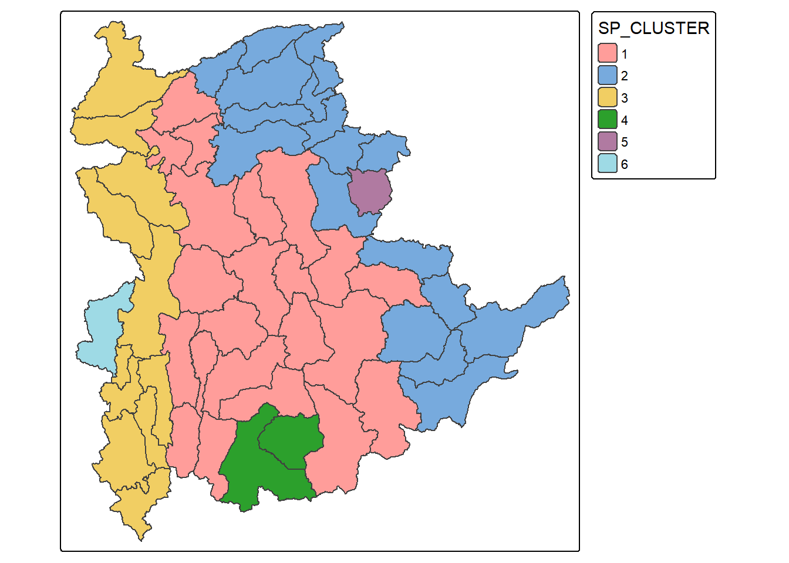
The code chunk below plots the hierarchical clustering ad spatially constrained hierarchical clustering maps side by side.
hclust.map <- qtm(shan_sf_cluster, "CLUSTER") +
tm_borders() +
tm_layout(legend.position = c("right","top")) +
tm_title("Hierarchical Clustering")
shclust.map <- qtm(shan_sf_spatialcluster, "SP_CLUSTER") +
tm_borders() +
tm_layout(legend.position = c("right","top")) +
tm_title("Spatially Constrained Hierarchical Clustering")
tmap_arrange(hclust.map, shclust.map,
asp = NA, ncol = 2)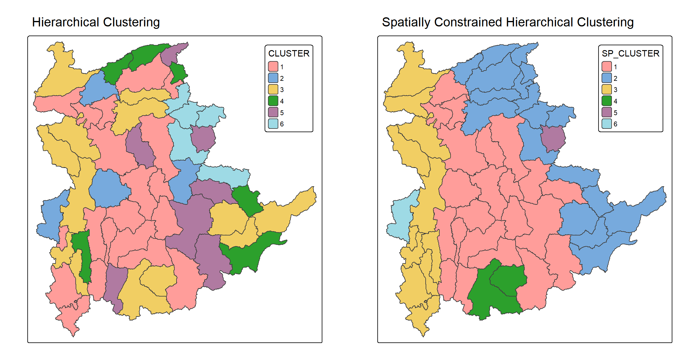
9 Spatially Constrained Clustering: ClustGeo Method
In this section, we perform non-spatially constrained hierarchical cluster analysis and spatially constrained cluster analysis with ClustGeo package.
9.1 A short note about ClustGeo package
ClustGeo is an R package for spatially constrained clustering.
It implements a Ward-like (variance-minimising) hierarchical method, hclustgeo(), that blends two dissimilarities:
D0: a
distobject represents dissimilarity in the attribute space (can be non-Euclidean; observations may be weighted).D1: a
distobject represents dissimilarity in the spatial/constraint space.
A mixing parameter alpha (0,1) controls the trade-off via a convex combination of homogeneity criteria:
criterion= (1-a) * crit(D0) + a * crit*(D1)
The goal is to choose alpha to increase spatial contiguity without unduly harming cluster quality on the variables of interest. The function choicealpha() estimates a suitable alpha by comparing solutions across alpha values.
Note
hclustgeo(D0, D1 = NULL, alpha = 0, scale = TRUE, wt = NULL)
hclustgeo(D0) = non-spatial (standard Ward).
hclustgeo(D0, D1, alpha) = spatially constrained clustering.
Scale is used when both D0 and D1 are included, and scaled by i.e. divided by their max.
9.2 Ward-like hierarchical clustering: ClustGeo
hclustgeo() extends the base R function hclust(). Under the hood, it constructs a dendrogram object with the same structure as stats::hclust.
The code chunk below use hclustgeo() to perform hierarchical clustering.
nongeo_cluster <- hclustgeo(proxmat)
nongeo_cluster
Call:
stats::hclust(d = delta, method = "ward.D", members = wt)
Cluster method : ward.D
Distance : euclidean
Number of objects: 55 plot(nongeo_cluster, cex = 0.5)
rect.hclust(nongeo_cluster, k = 6, border = 2:5) 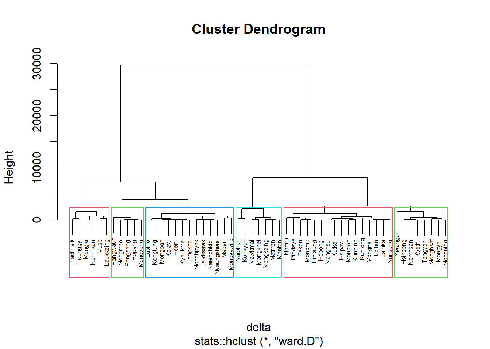
#`border = 2:5` means: to use **red, green, blue, and cyan** as the rectangle borders.9.3 Mapping the clusters formed
The code chunk below plots the non-spatial constrained hierachical clustering.
qtm(shan_sf_ngeo_cluster, "CLUSTER")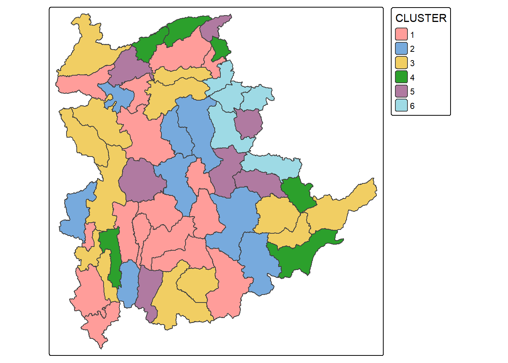
hclust.map <- qtm(shan_sf_cluster, "CLUSTER") +
tm_borders() +
tm_layout(legend.position = c("right","top")) +
tm_title("Hierarchical Clustering (hclust)")
ngeohclust.map <- qtm(shan_sf_ngeo_cluster, "CLUSTER") +
tm_borders() +
tm_layout(legend.position = c("right","top")) +
tm_title("Non-Spatially Constrained Hierarchical Clustering (hclustgeo)")
tmap_arrange(hclust.map, ngeohclust.map,
asp = NA, ncol = 2)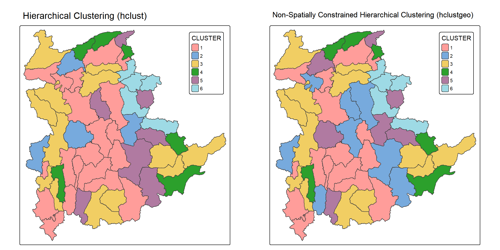
9.4 Spatially Constrained Hierarchical Clustering
To prepare for spatially constrained hierachical clustering, we use st_distance() of sf package to compute a spatial distance matrix.
dist <- st_distance(shan_sf, shan_sf)
head(dist,1)Units: [m]
[,1] [,2] [,3] [,4] [,5] [,6] [,7] [,8] [,9]
[1,] 0 195556.5 129387.7 263507 0 206100.8 323534.5 69522.93 23022.69
[,10] [,11] [,12] [,13] [,14] [,15] [,16] [,17] [,18]
[1,] 0 86379.4 169810 253312.4 271081.4 54016.4 285264.8 95471.83 100263.9
[,19] [,20] [,21] [,22] [,23] [,24] [,25] [,26]
[1,] 56159.89 300991.4 187467.3 346871.3 200861.7 238059.7 26041.16 308358.4
[,27] [,28] [,29] [,30] [,31] [,32] [,33] [,34]
[1,] 155844 215441.8 153710.8 161431.3 19075.49 338736.6 146179.6 226142.3
[,35] [,36] [,37] [,38] [,39] [,40] [,41] [,42]
[1,] 163288.6 238257.8 258443.6 310443.8 59815.62 137576.2 140386.9 36623.07
[,43] [,44] [,45] [,46] [,47] [,48] [,49] [,50]
[1,] 293579.1 284036.7 169757.2 203107.4 205997.2 129325.8 189677.3 0
[,51] [,52] [,53] [,54] [,55]
[1,] 238175.5 207050.3 364419.3 108778.1 0 Min. 1st Qu. Median Mean 3rd Qu. Max.
0 62189 140178 146980 224013 444128 cr <- choicealpha(proxmat, distmat, range.alpha = seq(0,1,0.1), K = 6, graph = TRUE)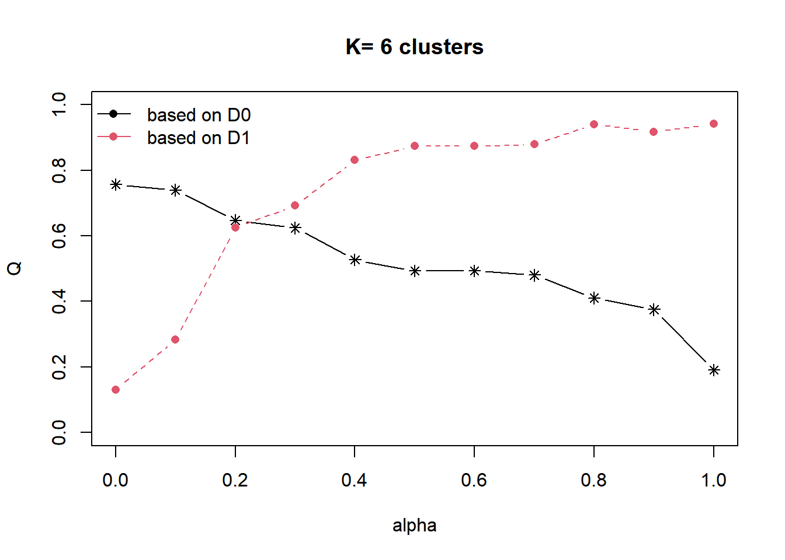
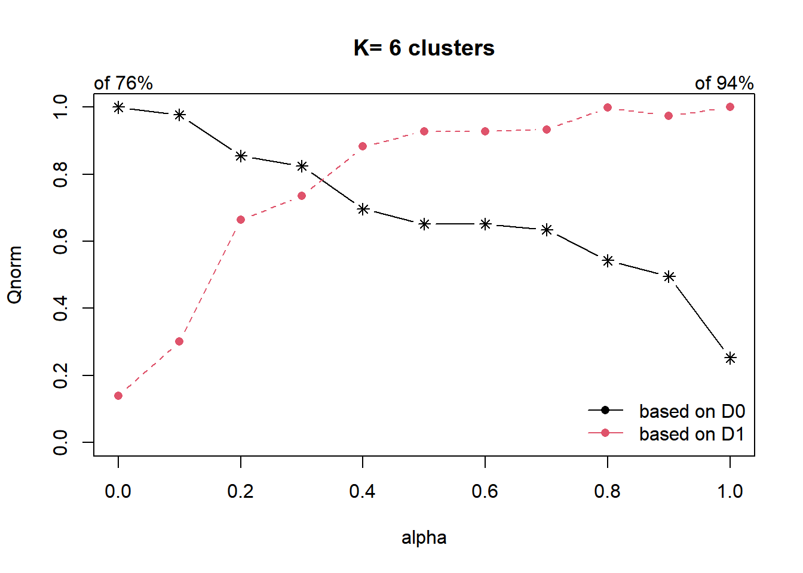
The two diagnostic plots show that at an alpha level of 0.2–0.3, the trade-off between attribute quality and spatial quality is well balanced. Here, Q denotes the partition quality index, analogous to an R2 measure, indicating how much of the variability is explained by the clustering partition.
The code chunk below uses alpha = 0.2 to derive the clusters.
clustG <- hclustgeo(proxmat, distmat, alpha = 0.2)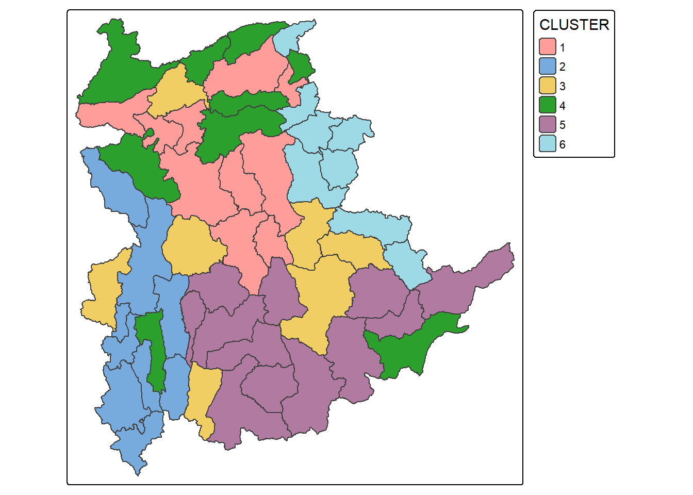
hclust.map <- qtm(shan_sf_Gcluster, "CLUSTER") +
tm_borders() +
tm_layout(legend.position = c("right","top")) +
tm_title("Spatially Constrained (hclustgeo)")
shclust.map <- qtm(shan_sf_spatialcluster, "SP_CLUSTER") +
tm_borders() +
tm_layout(legend.position = c("right","top")) +
tm_title("Spatially Constrained (skater)")
tmap_arrange(hclust.map, shclust.map,
asp = NA, ncol = 2)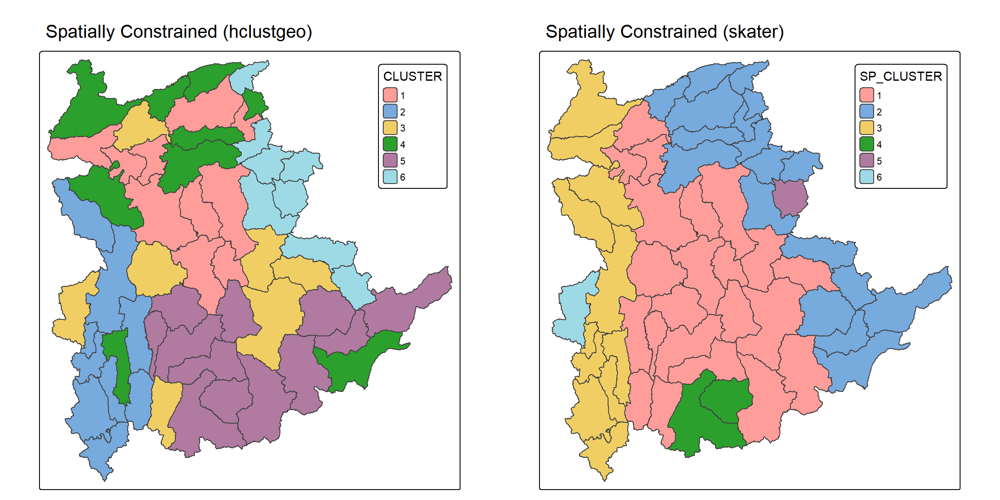
10 Visual Interpretation of Clusters
10.1 Visualising Individual Clustering Variable
The code chunk below visualises the distribution of a clustering variable (i.e. RADIO_PR) by cluster.
ggplot(data = shan_sf_ngeo_cluster,
aes(x = CLUSTER, y = RADIO_PR)) +
geom_boxplot()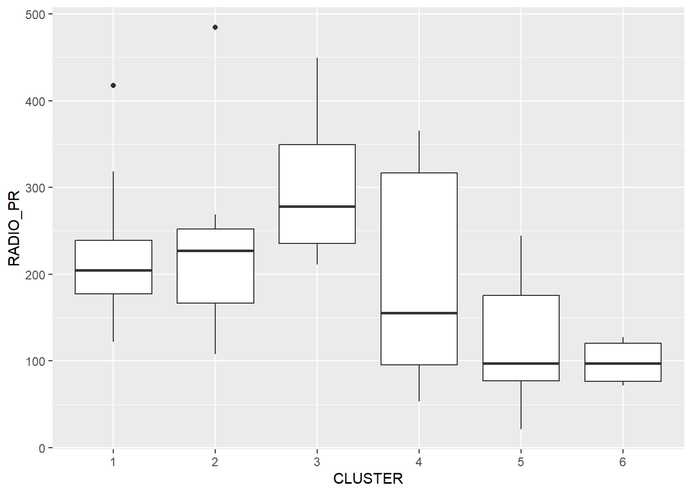
The boxplot shows Cluster 3 has the highest Radio Ownership per thousand household on average and followed by Cluster 2, 1, 4, 5 and 6.

10.2 Multivariate Visualisation
The code chunk creates parallel coordinate plots to reveal clustering variables by cluster using ggparcoord() of GGally package.
ggparcoord(data = shan_sf_ngeo_cluster,
columns = c(17:21),
scale = "globalminmax",
alphaLines = 0.2,
boxplot = TRUE,
title = "Multiple Paralle Coordinates Plots of ICT Variables by Cluster") +
facet_grid(~ CLUSTER) +
theme(axis.text.x = element_text(angle = 30))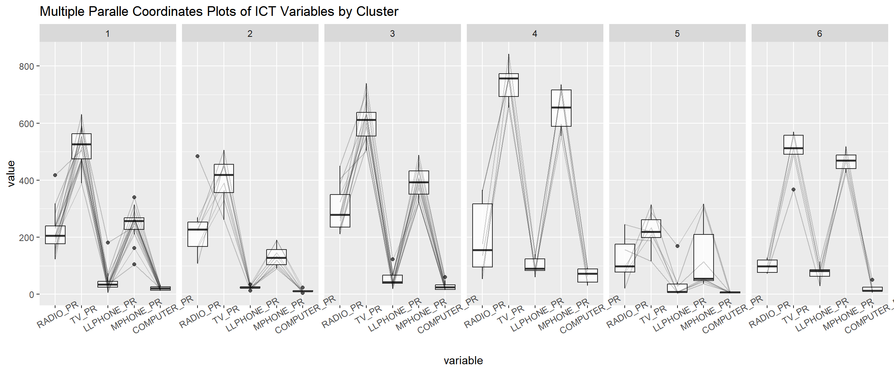
The parallel coordinate plot shows that households in Cluster 4 townships tend to own the highest numbers of TVs and mobile phones, whereas households in Cluster 5 townships record the lowest ownership across all five ICT assets.
Below is a summary of the scale options in ggparcoord():
- std: standardise by mean and standard deviation.
- robust: standardise by median and median absolute deviation.
- uniminmax: rescale each variable to [0, 1] range.
- globalminmax: no scaling; all variables share the same global min–max.
- center: uniminmax scaling, then centre at a chosen summary value.
- centerObs: uniminmax scaling, then centre at a chosen observation.
There is no universally best method.
Finally, the code chunk below calculates summary statistics such as mean, median, sd, etc.
# A tibble: 6 × 6
CLUSTER mean_RADIO_PR mean_TVO_PR mean_LLPHONE_PR mean_MPHONE_PR
<chr> <dbl> <dbl> <dbl> <dbl>
1 1 221. 521. 44.2 246.
2 2 237. 402. 23.9 134.
3 3 300. 611. 52.2 392.
4 4 196. 744. 99.0 651.
5 5 124. 224. 38.0 132.
6 6 98.6 499. 74.5 468.
# ℹ 1 more variable: mean_COMPUTER_PR <dbl>vars <- c("RADIO_PR", "TV_PR", "LLPHONE_PR", "MPHONE_PR", "COMPUTER_PR")
cluster_summary <- function(data, cluster_var, vars) {
data %>%
st_set_geometry(NULL) %>% # drop geometry if sf
group_by(.data[[cluster_var]]) %>%
summarise(
across(all_of(vars),
list(mean = mean, sd = sd, median = median),
.names = "{.col}_{.fn}"),
.groups = "drop"
)
}
summary_table_t <- cluster_summary(shan_sf_ngeo_cluster, "CLUSTER", vars) %>%
t() %>%
as.data.frame()
kable(summary_table_t, caption = "Cluster Summary (Mean, SD, Median)")| V1 | V2 | V3 | V4 | V5 | V6 | |
|---|---|---|---|---|---|---|
| CLUSTER | 1 | 2 | 3 | 4 | 5 | 6 |
| RADIO_PR_mean | 220.7496 | 236.5797 | 300.0958 | 195.8290 | 124.0485 | 98.6192 |
| RADIO_PR_sd | 73.35035 | 113.15974 | 76.42307 | 137.20670 | 77.58482 | 25.12016 |
| RADIO_PR_median | 204.77685 | 227.34993 | 278.08501 | 155.43315 | 97.44231 | 97.44765 |
| TV_PR_mean | 520.8871 | 401.5410 | 611.4077 | 743.7454 | 224.1195 | 499.1921 |
| TV_PR_sd | 63.40016 | 80.52002 | 70.99142 | 69.94159 | 64.83833 | 80.69958 |
| TV_PR_median | 525.8778 | 418.8207 | 611.6204 | 757.3437 | 219.4093 | 512.6855 |
| LLPHONE_PR_mean | 44.21883 | 23.90341 | 52.19443 | 98.99691 | 37.98043 | 74.54971 |
| LLPHONE_PR_sd | 41.059883 | 6.928281 | 27.661573 | 31.419089 | 59.701102 | 31.394566 |
| LLPHONE_PR_median | 33.768563 | 22.842511 | 42.497972 | 89.388902 | 8.438819 | 81.746586 |
| MPHONE_PR_mean | 245.7741 | 134.1802 | 392.2518 | 650.5613 | 131.9753 | 468.1360 |
| MPHONE_PR_sd | 55.91283 | 39.13840 | 53.98977 | 79.48668 | 124.95266 | 37.05115 |
| MPHONE_PR_median | 256.8494 | 127.7073 | 392.6089 | 654.7088 | 54.7963 | 469.0187 |
| COMPUTER_PR_mean | 20.474406 | 11.498389 | 28.997656 | 65.530210 | 6.682603 | 21.021828 |
| COMPUTER_PR_sd | 6.802811 | 5.259506 | 14.404024 | 27.525848 | 2.657472 | 17.773606 |
| COMPUTER_PR_median | 20.357389 | 10.757804 | 25.141930 | 71.883205 | 6.853583 | 12.847119 |
11 Reference
Kam, T. S. 8 Spatial Weights and Applications. R for Geospatial Data Science and Analytics. https://r4gdsa.netlify.app/chap12